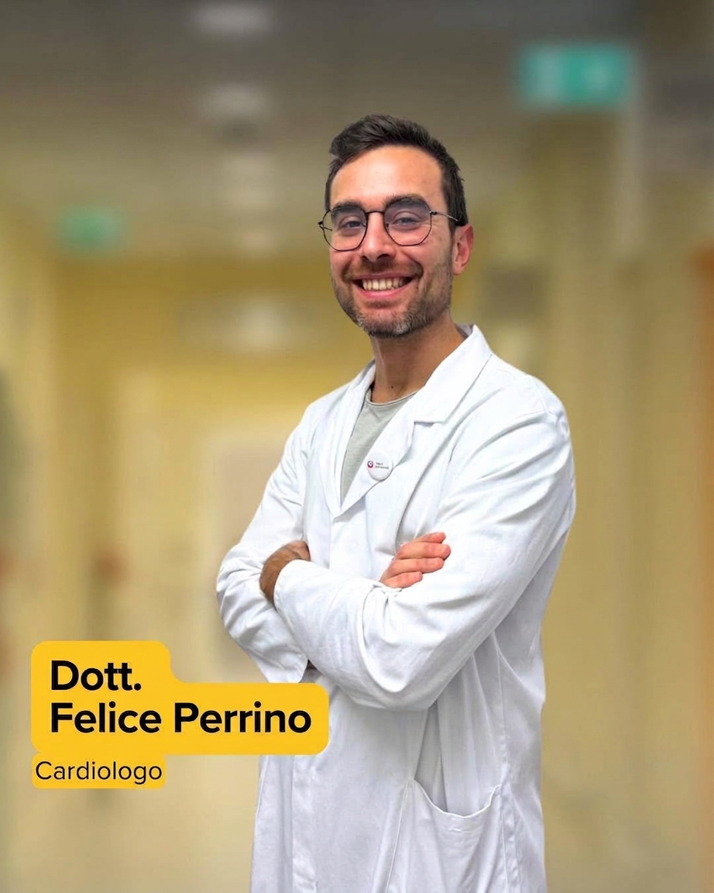

Cardiologia clinica e prevenzione
Cura, Innovazione e Attenzione al Paziente
Un approccio alla cardiologia che unisce competenza, tecnologie diagnostiche e ascolto. Per proteggere il cuore, in ogni fase della vita.

Il medico
La persona, prima della diagnosi.
Il Dr. Felice Perrino è cardiologo e accompagna i pazienti in percorsi di prevenzione, diagnosi e cura cardiovascolare con un metodo rigoroso e comprensibile.
Ogni visita parte dall'ascolto: storia clinica, stile di vita e obiettivi personali diventano parte di un quadro completo, per prendere decisioni consapevoli insieme.
Conosci l'approccio clinicoUn percorso di fiducia
Competenza che si traduce in cura.
01
Tecnologie avanzate
Strumenti diagnostici moderni per leggere con precisione i segnali del cuore.
02
Diagnosi accurata
Valutazioni complete, spiegate con parole chiare e attenzione a ogni dettaglio.
03
Percorsi personalizzati
Prevenzione, terapia e controlli costruiti sulle esigenze della singola persona.
Esperienze di cura
Il primo passo
Prenditi cura del tuo cuore.
Richiedi una visita cardiologica specialistica.
Prenota un appuntamento